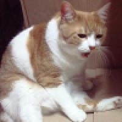

베트남, 고양이 2천700여 마리 훔쳐 식용 도축 일당 12명 체포
댓글
우리나라도 좀 출장나와라
ㄹㅇ
집고양이 납치는 좀

우리나라는 무료 고양이 많아요
나무 위에 걸려있다고 바나나로 착각했나
월남전때 캣시리즈한테 폭격맞음???
밥캣

야 여긴 길에 쳐널렸어 와서 싹 쓸어가라
살이 좀 있나? 안먹어봐서 맛이 어떤지를 모르겠네.
고양이를 먹을데가 있냐...
그러고보니 얘네 얼마전에 우리더러 개 먹는다고 뭐라고 하던 놈들인데...?
우리나라도 나비탕이라고 개 뿐만 아니라 고양이도 먹는데...
그 얘기는 아니고 얼마전 배그 논란 있었을때 베트남 유튜버가 은근슬쩍 우리나라에서 개고기 먹는다고 깠었거든 남의 나라 식문화를 왈가왈부 안해야하는건 똑같은데 걔들이 먼저 건드려서 그랬던거지
베트남이 연간 500만마리 정도로
중국 다음으로 세계 2위 소비국임.
22년 기준으로 공식 30-50만마리 정도 도축
25년 2분기 혹은 3분기 기준으로
잔류하는 사육용 개는 2.2만마리가 전부임.
먹을려고 하면 참새도 뼈 발라 먹는게 사람인데 고양이 정도면 먹을게 많지
참새구이 파는곳 있어
나비탕이 양냄새랑 똑같다고 어디서 들었는디


먹을 고기가 나와?
나 어릴때 어떤 미친 영감이 고양이 죽여서 나무가지에 묶은 다음에 껍데기 벗기는거 본 적 있는데
아...씨발 트라우마 올라온다 ㄷㄷㄷ
베트남에서 먹었던 소고기 돼지고기가 다 저 고양이 고기겟네
나비탕
중국에 수출되나?
북한산 같은데 가보면 천지빼까리니까 그냥 주워가도됨 걔들 사람봐도 겁도안내는데
베트남 사건사고 시발
진짜 먹긴 하는구나....
옛날 우리나라 개도둑들이랑 똑같네
야들야들하던 그 고기가 알고보니 떄껄룩..?
제발 한국으로
우리나라에서 수출하면 원재료값은 무료잖아
캣맘퇴치기 ㅋㅋ
주갤 형님들이 결혼하고 싶은 나라잖아?
한국와서 좀 가져가
쟤네가 집고양이 말고 길냥이 잡앗으면 잡히지도 않았을걸.
집냥이는 애완용이라 뭔가 백신이나 항생제등을 쓰는경우도 많아서 애완용 개 고양이는 식용 반대임 ㅋㅋㅋ
와서 일 하나 해라
베트남 일부 네티즌 중에
한국애들 개먹는다고 조롱하지 않았냐 ㅋㅋㅋㅋ
길천사 정상화는 역시 베트콩 ㅠㅠ